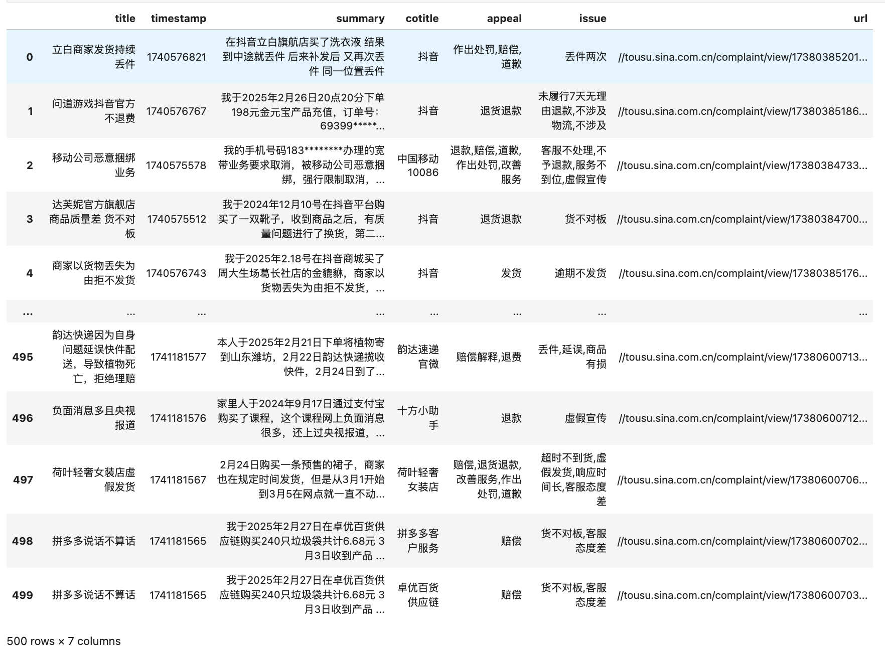
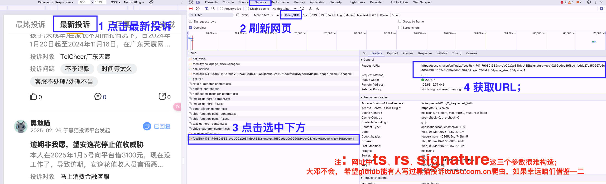
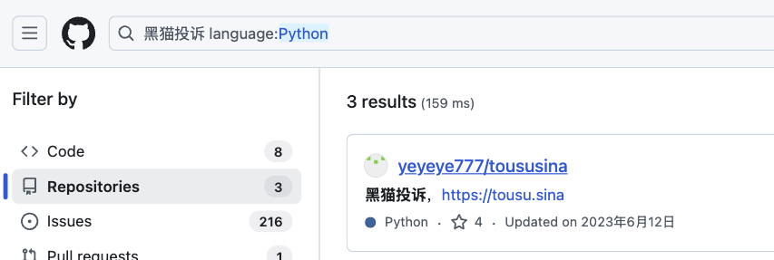
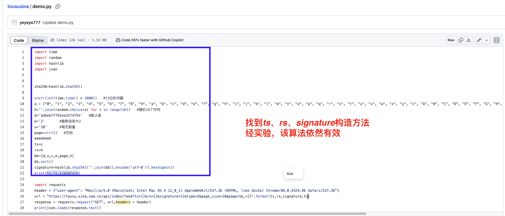
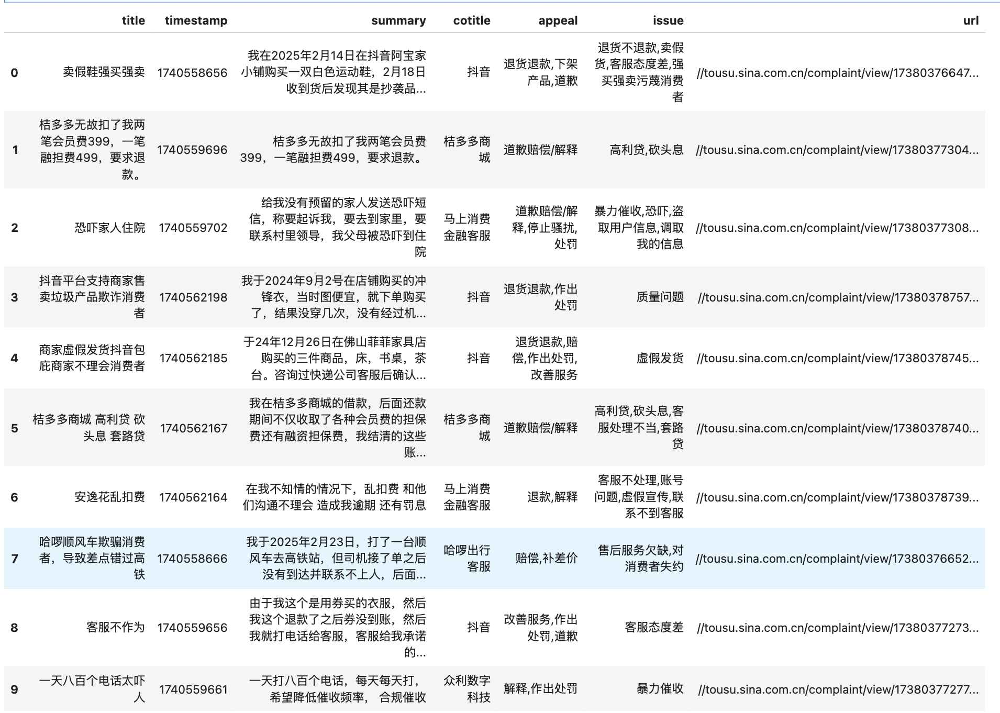

采集黑猫投诉数据如下， 该爬虫代码如何写？

撰写写爬虫的步骤
- 寻找网址规律urls ；
- 任选一个url， 对其发起访问requests，得到响应数据response
- 从响应数据response中提取自己感兴趣的字段field， 将数据字段存入数据文件(如csv、xlsx等)
- 使用 for循环 重复 2~3， 将所有的网址 urls 均依次进行访问、提取、存储，爬虫结束
五个步骤中 1. 寻找网址规律 是最难的一步， 搞定这一步，后面的都很简单。本文将详细分享第一步的操作细节， 其余步骤一笔带过。
一、寻找网址规律
1.1 初步分析
网站的网址规律分为静态和动态两种类型， 今天分享的 黑猫投诉网 是动态的， 即切换网页时，如最热投诉、最新投诉、已回复、已完成， 网址栏的网址始终不变 https://tousu.sina.com.cn/
1.2 开发者分析
确定 黑猫投诉网的网址规律 是动态型， 我以最新投诉为例， 我们需要依次进行如下操作
- 打开 浏览器开发者工具，
- 选择 Network面板 ，刷新网页或向下滚动页面
- 注意 Network面板 中出现很多网址， 依次查看每个链接， 寻找网址规律的线索
下面截图是大邓的操作截图， 最终找到 黑猫投诉·最新投诉 对应的网址规律目标template，template中可变参数有：
- page(页面数)
- ts(未知)、 rs(未知)、signature(未知) ；
template = f'https://tousu.sina.cn/api/index/feed?ts={ts}&rs={rs}&signature={signature}&type=2&page_size=10&page={page}'

1.3 借助网络力量
ts、rs、signature 这三个参数太难，一般情况大邓会放弃写这个爬虫，花钱找技术达人接手这个数据采集任务。
现在做这一步，希望网络中有高人(前人)解决这三参数构造，这样咱们可以爬到数据(还能省点钱)
念咒语(嘛哩嘛哩哄)， 借助网络的力量:
- 打开github， 搜 黑猫投诉， 语言选择 Python
- 依次查看搜索结果，把黑猫投诉相关仓库代码都浏览一遍， 寻找代码中是否出现 ts、 rs、signature 等字眼。
- 最终在
https://github.com/yeyeye777/toususina/blob/main/demo.py中找到三参数构造法，且实验后发现算法依然可行。


def gen_rs_ts_signature(page=1):
import time
import random
import hashlib
import json
sha256=hashlib.sha256()
c = str(int(time.time() * 1000)) #13位时间戳
a = ["0", "1", "2", "3", "4", "5", "6", "7", "8", "9", "a", "b", "c", "d", "e", "f", "g", "h", "i", "j", "k", "l", "m", "n", "o", "p", "q", "r", "s", "t", "u", "v", "w", "x", "y", "z", "A", "B", "C", "D", "E", "F", "G", "H", "I", "J", "K", "L", "M", "N", "O", "P", "Q", "R", "S", "T", "U", "V", "W", "X", "Y", "Z"]
h =''.join(random.choice(a) for i in range(16)) #随机16个字符
d ='$d6eb7ff91ee257475%' #默认值
e = '2' #最新信息为2
u ='10' #每页数量
page=str(page) #页码
ts = c
rs = h
bb = [d,u,c,e,page,h]
bb.sort()
signature=hashlib.sha256((''.join(bb)).encode('utf-8')).hexdigest()
return ts,rs,signature
for page in range(1, 6):
ts,rs,signature = gen_rs_ts_signature(page=page)
url = f'https://tousu.sina.cn/api/index/feed?ts={ts}&rs={rs}&signature={signature}&type=2&page_size=10&page={page}'
print(page, url)
Run
1 https://tousu.sina.cn/api/index/feed?ts=1741183219941&rs=mqMovDIpI7FxhiiW&signature=007812aaec720c655748db472bb15fbaa7b026546ddfa9b520edaffe370d507d&type=2&page_size=10&page=1
2 https://tousu.sina.cn/api/index/feed?ts=1741183219941&rs=XjOZVfZiJ9o6NEHH&signature=282f5a6c30d4720b3d653dfa13bf1d6c31a4bb5b7baccc5c0e3b5445d67821bc&type=2&page_size=10&page=2
3 https://tousu.sina.cn/api/index/feed?ts=1741183219941&rs=N1eBlKMeQTnLQ26y&signature=b2cad655fb7beac6ca5ae1b6abb72debd0309de6c1e79f21e68b6ae4c6663e8a&type=2&page_size=10&page=3
4 https://tousu.sina.cn/api/index/feed?ts=1741183219941&rs=LVKITB2UrpLdIZIH&signature=5de4b51e8fdec631e0de47a2a34e797a99ea77beb4ca21abe91ec8955523dbd8&type=2&page_size=10&page=4
5 https://tousu.sina.cn/api/index/feed?ts=1741183219941&rs=FkUmQOXIFOzWrpfu&signature=f571a16f3ac90dae121fa444dde637294358abf34cf97ac56ea0001d48312f19&type=2&page_size=10&page=5
二、发起访问
任选一个url（page=1)， 对其发起访问requests，得到响应数据response
import requests
#避免网站反爬，使用伪装头
header = {"user-agent": "Mozilla/5.0 (Macintosh; Intel Mac OS X 12_0_1) AppleWebKit/537.36 (KHTML, like Gecko) Chrome/88.0.4324.96 Safari/537.36"}
#page=1的url
url = 'https://tousu.sina.cn/api/index/feed?ts=1741183219941&rs=mqMovDIpI7FxhiiW&signature=007812aaec720c655748db472bb15fbaa7b026546ddfa9b520edaffe370d507d&type=2&page_size=10&page=1'
#发起访问
resp = requests.get(url,headers = header)
resp.json()
Run
{'result': {'status': {'code': 0, 'msg': 'ok'},
'timestamp': 'Wed Mar 05 22:03:08 +0800 2025',
'data': {'lists': [
{'main': {'id': '33181177',
'sn': '17380385543',
'title': '中国移动流量异常使用消耗',
'couid': '1991428685',
'cotitle': '中国移动10086',
'appeal': '改善服务,赔偿解释',
'issue': '流量消耗问题',
'comment_id': 'tousu_complaint_33181177',
'timestamp': '1740577724',
'status': 6,
'upvote_amount': 0,
'share_amount': 0,
'summary': '我于2024年12月20日在淘宝平台上购买了一张中国移动的流量电话卡，于今日遇到流量消耗异常的问题。我的手机上都有流量消耗的记录，快手是30g的流量消耗。可是中国移动中的套餐定向流量包含着快手，但是只消耗了15个g，剩余的15个g被通用流量消耗。询问客服，客服说他们的定向流量没有问题，然后让他们给出我的通用流量的...',
'url': '//tousu.sina.cn/complaint/view/17380385543/?sld=ec54e136b3aaaae3b5e6ac7a929271ec',
'evaluate_u': None,
'ext_src': '0',
'field': '55',
'cost': '50',
'tpl': '0',
'comment_amount': 0,
'has_jury': False,
'is_upvote': False},
'author': {'title': '机灵喵',
'avatar': '//n.sinaimg.cn/finance/235fa465/20230314/3.png'}},
...
...
{'main': {'id': '33396892',
'sn': '17380601258',
'title': '驰诚农机专营店微耕机已退货，不退款',
'couid': '6244211375',
'cotitle': '拼多多客户服务',
'appeal': '退货退款,作出处罚,道歉',
'issue': '退货不退款,机器无法正常运行工作,响应时间长,客服态度差',
'comment_id': 'tousu_complaint_33396892',
'timestamp': '1741182983',
'status': 4,
'upvote_amount': 0,
'share_amount': 0,
'summary': '我于2月20日在拼多多驰诚农机专营店买了一台微耕机，总价值为2150元，收到货后拼装组装好无法使用后退货退款，根据协商，拼多多开通退货退款窗口，商家收到货后一直不退款，平台客服也不处理，一直让等待，也没有处理方案，推皮球，要求尽快处理',
'url': '//tousu.sina.cn/complaint/view/17380601258/?sld=f0b469a54216a2335b2dc544cf97924f',
'evaluate_u': None,
'ext_src': '0',
'field': '6',
'cost': '2150',
'tpl': '3',
'comment_amount': 0,
'has_jury': False,
'is_upvote': False},
'author': {'title': '机灵喵',
'avatar': '//n.sinaimg.cn/finance/235fa465/20230314/3.png'}}],
'pager': {'current': 1,
'next': 2,
'page_amount': 11974,
'page_size': 10,
'item_count': 119734}}}}
pd.to_datetime('1741169556', unit='s')
三、提取字段&存储到csv
黑猫投诉网站返回的响应数据是 json 格式，格式整洁， 非常容易进行字段筛选和提取。每个响应数据，会返 含10 个投诉的列表，
print(len(response.json()['result']['data']['lists']))
response.json()['result']['data']['lists']
Run
10
[{'main': {'id': '33172281',
'sn': '17380376647',
'title': '卖假鞋强买强卖',
'couid': '6020086612',
'cotitle': '抖音',
'appeal': '退货退款,下架产品,道歉',
'issue': '退货不退款,卖假货,客服态度差,强买强卖污蔑消费者',
'comment_id': 'tousu_complaint_33172281',
'timestamp': '1740558656',
'status': 6,
'upvote_amount': 0,
'share_amount': 0,
'summary': '我在2025年2月14日在抖音阿宝家小铺购买一双白色运动鞋，2月18日收到货后发现其是抄袭品牌smfk的鞋子，于是在2月18日里面申请了退货退款，但是其收到货后一口咬定我调换了他们家鞋子，并且无法提供完整的收发货视频。',
'url': '//tousu.sina.com.cn/complaint/view/17380376647/?sld=b965241622ff70025f17ad3fed955f76',
'evaluate_u': None,
'ext_src': '0',
'field': '37',
'cost': '499',
'tpl': '3',
'comment_amount': 0,
'has_jury': False,
'is_upvote': False},
'author': {'title': '机灵喵',
'avatar': '//n.sinaimg.cn/finance/235fa465/20230314/3.png'}},
......
......
{'main': {'id': '33172911',
'sn': '17380377277',
'title': '一天八百个电话太吓人',
'couid': '7894766771',
'cotitle': '众利数字科技',
'appeal': '解释,作出处罚',
'issue': '暴力催收',
'comment_id': 'tousu_complaint_33172911',
'timestamp': '1740559661',
'status': 6,
'upvote_amount': 0,
'share_amount': 0,
'summary': '一天打八百个电话，每天每天打， 希望降低催收频率， 合规催收',
'url': '//tousu.sina.com.cn/complaint/view/17380377277/?sld=2a0c1176d0ce70a8654b4a716d05b1ff',
'evaluate_u': None,
'ext_src': '0',
'field': '37',
'cost': '8400',
'tpl': '0',
'comment_amount': 0,
'has_jury': False,
'is_upvote': False},
'author': {'title': '洞察喵',
'avatar': '//n.sinaimg.cn/finance/235fa465/20230314/4.png'}}]
假使我们要确定要提取的字段为 title、timestamp、summary、cotitle、appeal、issue、url。这里使用 for循环， 依次将数据保存到csv中。
import pandas as pd
import os
# 确定CSV文件路径
csv_file_path = '黑猫投诉.csv'
# 创建一个标志变量，用于判断是否是第一次写入
first_write = not os.path.exists(csv_file_path)
for complaint_card in response.json()['result']['data']['lists']:
data = dict()
data['title'] = complaint_card['main']['title']
data['timestamp'] = complaint_card['main']['timestamp']
data['summary'] =complaint_card['main']['summary']
data['cotitle'] = complaint_card['main']['cotitle']
data['appeal'] = complaint_card['main']['appeal']
data['issue'] = complaint_card['main']['issue']
data['url'] = complaint_card['main']['url']
df = pd.DataFrame([data])
# 写入DataFrame到CSV文件中
if first_write:
# 第一次写入时包含表头
df.to_csv(csv_file_path, mode='a', index=False, encoding='utf-8-sig')
first_write = False # 修改标志变量为False，以便后续不再写入表头
else:
# 后续追加数据时不包含表头
df.to_csv(csv_file_path, mode='a', index=False, header=False, encoding='utf-8-sig')
查看新生成的 黑猫投诉.csv，
pd.read_csv('黑猫投诉.csv')

四、最终完整代码
黑猫投诉最大能翻看50页，即向下翻看更多时，最多能翻50次。结果存储 黑猫投诉.csv 。需要设置的参数
- max_page=50
- csv_file_path = ‘黑猫投诉.csv’
本章节将汇总步骤一(网址规律)、步骤二(访问一个网页)、步骤三(提取&保存)， 得到实践中完整的爬虫代码(tousu-spider.py)
import pandas as pd
import os
import requests
from tqdm import tqdm
import time
#避免网站反爬，使用伪装头
header = {"user-agent": "Mozilla/5.0 (Macintosh; Intel Mac OS X 12_0_1) AppleWebKit/537.36 (KHTML, like Gecko) Chrome/88.0.4324.96 Safari/537.36"}
def gen_rs_ts_signature(page=1):
import random
import time
import hashlib
import json
sha256=hashlib.sha256()
c = str(int(time.time() * 1000)) #13位时间戳
a = ["0", "1", "2", "3", "4", "5", "6", "7", "8", "9", "a", "b", "c", "d", "e", "f", "g", "h", "i", "j", "k", "l", "m", "n", "o", "p", "q", "r", "s", "t", "u", "v", "w", "x", "y", "z", "A", "B", "C", "D", "E", "F", "G", "H", "I", "J", "K", "L", "M", "N", "O", "P", "Q", "R", "S", "T", "U", "V", "W", "X", "Y", "Z"]
h =''.join(random.choice(a) for i in range(16)) #随机16个字符
d ='$d6eb7ff91ee257475%' #默认值
e = '2' #最新信息为2
u ='10' #每页数量
page=str(page) #页码
ts = c
rs = h
bb = [d,u,c,e,page,h]
bb.sort()
signature=hashlib.sha256((''.join(bb)).encode('utf-8')).hexdigest()
return ts,rs,signature
# 确定CSV文件路径
csv_file_path = '黑猫投诉.csv'
#假设采集1-50页
max_page = 50
#for循环， 遍历每个url，均进行访问、提取、保存
for page in tqdm(range(1, max_page+1), '采集进度'):
time.sleep(1)
ts,rs,signature = gen_rs_ts_signature(page=page)
page_url = f'https://tousu.sina.cn/api/index/feed?ts={ts}&rs={rs}&signature={signature}&type=2&page_size=10&page={page}'
page_resp = requests.get(page_url,headers = header)
# 创建一个标志变量，用于判断是否是第一次写入
first_write = not os.path.exists(csv_file_path)
for complaint_card in page_resp.json()['result']['data']['lists']:
data = dict()
data['title'] = complaint_card['main']['title']
data['timestamp'] = complaint_card['main']['timestamp']
data['summary'] =complaint_card['main']['summary']
data['cotitle'] = complaint_card['main']['cotitle']
data['appeal'] = complaint_card['main']['appeal']
data['issue'] = complaint_card['main']['issue']
data['url'] = complaint_card['main']['url']
df_ = pd.DataFrame([data])
# 写入DataFrame到CSV文件中
if first_write:
# 第一次写入时包含表头
df_.to_csv(csv_file_path, mode='a', index=False, encoding='utf-8')
first_write = False # 修改标志变量为False，以便后续不再写入表头
else:
# 后续追加数据时不包含表头
df_.to_csv(csv_file_path, mode='a', index=False, header=False, encoding='utf-8')
代码运行结束后，我们查看下最终数据
final_df = pd.read_csv('黑猫投诉.csv')
final_df
下载代码
精选内容
- LIST | 可供社科(经管)领域使用的数据集汇总
- LIST | 社科(经管)数据挖掘文献资料汇总
- 推荐 | 文本分析库cntext2.x使用手册
- 付费视频课 | Python实证指标构建与文本分析
- 教程 | 使用大模型将文本数据转化为结构化数据
- 数据集| 1500w+消费者投诉数据集(2018 ~ 2024.8)